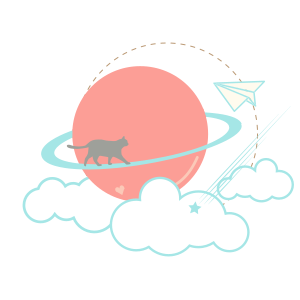

經歷 Experience
UI 設計師
關鍵評論網股份有限公司 2021.12 ~ Now- 負責設計 UI/UX、製作 UI Kit、Mockup、Prototype，與團隊討論產品方向，維護 UI Component 確保符合產品需求
- 負責前端開發、與後端工程師協作、與產品經理確認需求並及時反饋、確保UI設計與視覺設計一致性
線上課程進修與技能提升
UIUX及前端技能 2020.7 ~ 2021.11- 學習 Figma / Sketch
- 學習 Wireframe、Mockup、Prototype 之應用
- 學習 iOS & Android UI Design Guideline
- 學習 Git 版本控制
網頁設計師
冠諭科技股份有限公司 2019.6 ~ 2020.6- 與後端協作進行網站平台改版/維護
- 網頁相關視覺設計(Banner / E-dm / Newsletter)
- 無障礙網頁開發與維護
語言學校與線上課程進修
網頁設計相關技能 2018.8 ~ 2019.6- HTML / CSS
- jQuery
- Responsive Web Design (RWD)
- Bootstrap
- SCSS
- ESL英文進修
- Toeic多益檢定
- Volunteer志工活動
品牌視覺設計師
格蕾寢飾國際有限公司(電商) 2016／03～2018／04- 視覺設計與陳列佈置
- 網頁行銷素材設計(Banner設計、EDM、產品內文圖、通路廣告等)
- 網站改版設計規劃
品牌視覺設計師
美商新秀麗太平洋有限公司台北分公司 2015／07～2016／02- 視覺設計與陳列佈置
- 網頁素材(Banner設計、廣告素材)
品牌視覺設計師
東家建設有限公司 2011／10～2015／02- 視覺設計與陳列佈置
- VI設計(企業視覺識別)
- 網站改版設計與規劃
數位媒體設計系
國立雲林科技大學 2007～2011專案成就 Gallery
媒體新聞網站
『關鍵評論網 The News Lens 』是台灣的獨立評論媒體網站，提供多元觀點，讓一個事件有不同切入角度，讓社群世代的讀者，能輕鬆分享和參與討論。主要受眾為關注亞洲訊息的海外華僑、在台外籍人士等，有中文版、English Edition、日本版三種語系版本。此次redesign為國際版，專案中我擔任 UI 設計師。
UI design Figma RWD Mockup UI Kit redesign
專題報導網站
『Inside 半導體人才趨勢全解析專題』介紹目前台灣半導體產業趨勢及現況，人才短缺等的議題。專案中我擔任 UI 設計師。
UI design Figma RWD Mockup UI Kit
政見配對遊戲
『給你珊時萬，你想投給誰？』為關鍵評論網推出的 2022 年台北市長選舉政見配對遊戲，黃珊珊？陳時中？蔣萬安？你心目中台北的願景，最符合哪個候選人的政見？進入投票所之前，讓我們先來做個配對測驗！
Figma UI Guideline Mockup prototype RWD工作技能 Skills
UI/UX設計 UI/UX Design
Figma / Sketch / Illustrator / Photoshop
- UI / UX 設計
- UI Kit / UI Pattern / UI guideline
- wireframe
- mockup
- prototype
前端開發 Web Design
- 能使用bootstrap搭配scss開發響應式網站
- 能使用html+css做Responsive Web Design響應式設計
- 能使用動畫效果插件提升網頁質感
- 能使用jQuery做簡單網頁互動效果
- 使用Git搭配Sourcetree做版本控制
[ 編輯器 ] Visual Studio Code / Sublime Text
溝通合作 Cooperation
重視團隊合作，具良好的溝通合作能力也能獨立作業。
未來規劃 Goals
未來目標將著重於 UI / UX 領域，持續深耕。
個人成長 Self-growth

線上課程
藉由網路多樣化的教學平台與教學文章像個海綿般吸收充實，打開網頁設計之旅。

閱讀習慣
閱讀可滿足旺盛的求知慾，它是充實知識的捷徑，無論是書籍或網路文章，我都非常喜歡。

海外遊學
離開學校步入職場多年後，將自己歸零重新回歸學生身份，踏出舒適圈充電迎接更多挑戰。